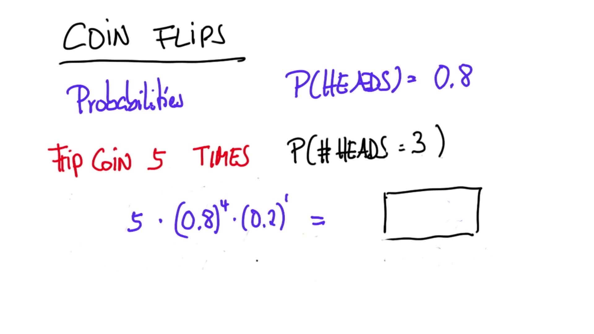

二项分布
Back to Home
01. 二项式
02. 正反面
03. 正反面 2
04. 掷硬币 5 次出现 1 次正面
05. 掷硬币 5 次出现 2 次正面
06. 掷硬币 5 次出现 3 次正面
07. 掷硬币 10 次出现 5 次正面
08. 公式
09. 排列
10. 二项式 1
11. 二项式 2
12. 二项式 3
13. 二项式 4
14. 二项式 5
15. 二项式 6
16. 二项式总结
17. 文本：总结 + 下节预告
Back to Home
14. 二项式 5
二项式 5
Question:
Start Quiz:

Solution:
Next Concept